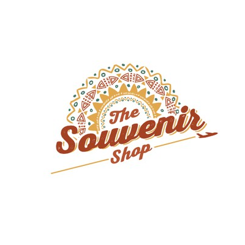

The Philippines (Filipino: Pilipinas or Filipinas) , officially the Republic of the Philippines (Filipino: Republika ng Pilipinas), is an archipelagic country in Southeast Asia. Situated in the western Pacific Ocean, it consists of about 7,641 islands that are broadly categorized under three main geographical divisions from north to south: Luzon, Visayas, Mindanao.
José Protasio Rizal Mercado y Alonso Realonda; June 19, 1861 – December 30, 1896) was a Filipino nationalist and polymath during the tail end of the Spanish colonial period of the Philippines. He is tagged as the national hero (pambansang bayani) of the Filipino people. An ophthalmologist by profession, Rizal became a writer and a key member of the Filipino Propaganda Movement, which advocated political reforms for the colony under Spain. He was executed by the Spanish colonial government for the crime of rebellion after the Philippine Revolution, inspired in part by his writings, broke out.
He wrote 2 novels during the Spanish Colonial Period:The barong tagalog, more commonly known simply as barong (and occasionally baro), is an embroidered long-sleeved formal shirt for men and a national dress of the Philippines. Barong tagalog combines elements from both the precolonial native Filipino and colonial Spanish clothing styles. It is traditionally made with sheer textiles (nipis) woven from piña or abacá; although in modern times, cheaper materials like silk, ramie, or polyester are also used. It is a common formal or semi-formal attire in Filipino culture, and is worn untucked over an undershirt with belted trousers and dress shoes. Baro't saya is the feminine equivalent of barong tagalog, with the Maria Clara gown being the formal variant of the latter. Barong tagalog was also known as camisa fuera ("outer shirt") in Spanish.
The national footwear of the Philippines is wooden clogs with a plastic strap and called ‘bakya.’ Bakya were made from local light wood e.g. santol and laniti. These were cut to the desired foot size before being shaven until smooth. The side of the bakya was thick enough to be carved with floral, geometric or landscape designs. Afterwards, the bakya were painted or varnished. Uppers of plastic or rubber were fastened using clavitos (tiny nails).
Lechon is also considered the national dish of the Philippines. The city of Cebu is considered one of the most famous places in the country for lechon. It is a dish that is almost a fixed part and menu centerpiece of any Filipino celebration which is usually prepared for fiestas, family celebrations (like parties and marriages) and also a favorite dish during Christmas. Lechon is the Spanish name for pig, in the Philippines it means a spit-roasted pig.
However, there are a lot of filipino dishes that one should be try on like:VISIT US✈ |
|||||||
|---|---|---|---|---|---|---|---|
|  |